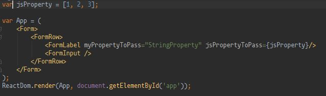

Hands on React
E-Biz
Objectives
- Better understanding of the javascript nebula.
- Differenciate Node and browser.
- Differenciate library (react, redux) and framework (angular).
- Be able to launch your project to prod.
- Use webpack in "real case".
- Use React in "real case".
- Play with Redux.
- Be able to create a client application.
Main rule
In javascript more than in any other language you should follow the rule "Make It Work, Make It Right, Make It Fast".
"Make it work" means it works for the users (in production).
Don't use React/redux/immutable.js/angular/angular2 if you don't need to.
History
Web Browser
In 1993 the first web browser appear by National Center for Supercomputing Applications (NCSA). It's name is NCSA Mosaic
Many of the original Mosaic authors went on to work on Netscape Navigator. In 1994, Netscape Navigator was given the codename: Mozilla, for "Mosaic killer". Officially in use in 1998.
Dynamic Language
In order to have dynamic content Netscape wanted to have a "glue" language. They first approach Sun Microsystem to add Java into the browser.
But they finally wanted there own language and hire Brendan Eich for write it. He wrote one in 10 days.
Javascript name
The first name was Mocha, then LiveScript and then Javascript. The name evolved to respond to marketing strategies.
Server Side Javascript
Server-side scripting with "Netscape Enterprise Server" was created in December 1995 (Node.js, I am your father !).
EcmaScript
In November 1996, Netscape submitted JavaScript to Ecma International. It's first edition was in June 1997.
DOM manipulation and Ajax
DOM (Document Object Model). Ajax (asynchronous JavaScript and XML).
In 2006, manipulation of DOM between different web browsers is a mess. The community started to create library like jQuery or Prototype (for Ajax).
Node.js
In 2009 was create the first release of Node.js a server-side javascript runtime based on V8 javascript engine.
MVC client side framework
2010 is the begining MVC javascript framework such as:
- Angular
- Ember
- Backbone
- Knockout
In 2017, Javascript hype?
- React
- Angular 2
- Vue.js
- Electron
- Nodejs
- NPM
- Commonjs
- Webpack
- Browserify
- Ractive
- Rollup
- Gobble
- Immutable.js
- ES6
- Babel
- Standard.js
- RxJS
- Cycle.js
- ELM
- Redux
- Ramda
Javascript
"JavaScript is a high-level, dynamic, untyped, and interpreted programming language."
Javascript Modules
Module is the way to split our code. There is 3 type of modules in JS: AMD, CommonJs and ES modules.
NodeJs
Interpreter of Javascript, with library for creating server side applications in javascript.
NPM
Dependency manager for Javascript base on CommonJs modules.
useful commands
Install command will pull the dependency from npmjs.com repository and will install it in the local node_modules.
npm install batman-dep
useful commands
run command will execute the script describe in package.json.
{
"name": "example1-environement",
"version": "1.0.0",
"description": "intall environement exercice",
"main": "index.js",
"scripts": {
"echo": "echo -e 'nothing to display, no script'"
},
"author": "jbpetit@excilys.com",
"license": "MIT"
}
npm run echo
Webpack 2
Webpack self defines as a module bundler. It a tool that permit to build and package our application. There is four important notion.
- entry - The entries point of your application.
- output - Where webpack should output the code.
- module - What kind of file webpack will load.
- plugins - Enrich the build job with some plugins.
Webpack 2
Config file example
var path = require("path");
module.exports = { // This is just a commonJs Module
entry: {
app: ["./app.js"] // Entry point
},
output: {
path: path.resolve(__dirname, "package"), // Output dir
filename: "bundle.js"
},
module: {
// Load some modules
},
plugins: [
// Load some plugins
]
};
Exercise 1
ES6
ECMAScript 6 is the latest ECMAScript standard. It updates JS with necessary functionalities like arrows function, class, const, modules and more !
ES6 is not fully implemented in browser. Chrome desktop implement 98% of ES6 today - 2017/04.
var odds = evens.map(v => v + 1); // arrow function
class Test extends Mamama { // class
constructor(){...}
...
}
const TEST = "TEST" ; // const
import * as math from "lib/math"; // import
Babel
Is a javascript "transpiler" it allow developer to write ES6 that can run on every web browser. It "transpile" also JSX, TypeScript and CoffeeScript.
[1,2,3].map(n => n + 1); // before babel
[1,2,3].map(function(n) {
return n + 1; // after babel
});
ESLint
"The pluggable linting utility for JavaScript and JSX"
module.exports = {
entry: {},
output: {},
module: {
preLoaders: [
// ESLint loader goes here, DON'T forget to exclude node_modules or you will try to Lint vendor library.
],
loaders: []
},
plugins: [],
eslint: {
// if you do not use an .eslintrc.json file you can specify parameters here
rules: {
// Rules goes here
},
parserOptions: {
// options like the ecmascript version goes here
sourceType: 'module', // Tells ESLint that we use modules (like commonJs modules)
}
}};
Lodash
"A modern JavaScript utility library delivering modularity, performance, & extras."
_.camelCase("__FOO_BAR__");
// → "fooBar"
_.uniq([2, 1, 2]);
// → [2, 1]
var users = [
{ user: "barney", age: 36, active: true },
{ user: "fred", age: 40, active: false }
];
_.filter(users, 'active');
// → objects for ['barney']
UglifyJs2
"UglifyJS is a JavaScript parser, minifier, compressor or beautifier toolkit."
Exercise 2
React
"A JAVASCRIPT LIBRARY FOR BUILDING USER INTERFACES"
Advantages
- On prod @Facebook and @Instagram.
- Not a framework (like Angular).
- Can use as CommonJS module.
- Can write it with ES6.
- Really fast.
- Well documented.
- Easy to understand.
Drawbacks
- Not a framework.
- JSX (disturbing syntax).
- Write HTML with javascript means that robots (like those of Google) cannot read the documents.
- Component easier than Directive.
- Hard to well use.
React virtual DOM
Guys @Facebook presumption are, DOM update is slow, but javascript is fast. With this principle, they have create a library that updates as little as possible the DOM. How ? By observing the changes in a JS (tree) representation of the DOM. Then with a diff algorithms, by updating only the part of the DOM's that needs one.

Create an element
React.createElement('type of DOM element', props, 'text', childsElement...);
Create an element NOTE
To modify the real DOM react need to know which element have been modify. If you want React render an array of element, each element need a unique key to be able to know which element have been changed.
A key is just a property of a react element.
React.createElement('type of DOM element', {key: 'blabla'}, 'text', childsElement...);
Render an element
ReactDom.render(elementToRender, DOMelementWhereToRender);
Exercice 3
React, Angular 2, Vue.js
Library/framework of components.
Why ? Easier to maintain/split/work together.
JSX
Syntax for writing pseudo HTML in javascript. It replace the painful createElement.
Create a component
class BatmanComponent extends Component {
constructor(props) {
super(props);
this.jsPropertyToPass = props.jsPropertyToPass;
}
render() {
this.jsPropertyToPass.map(...);
return (
//JSX here.
);
}
}
Exercice 4
CSS
In order to add style to your component use the JSX attribute 'className'.
classNames
Do not manipulate class names by yourself. Use classNames library.
var classNames = require('classnames');
classNames('foo', 'bar'); // => 'foo bar'
classNames({ 'foo-bar': true }); // => 'foo-bar'
classNames('foo', { bar: true }); // => 'foo bar'
React children components
Imagine you want to create a nav bar on top of your application. You can either add a nav component in all page component of your application, or you can create a generic component that hold the nav bar and some other unknown component.
In react, to access/display/modify this list of unknown components, you will use.
this.props.children;
React children components
Do NOT map or loop on the list of children by yourself because it is an opaque structure. Instead use.
React.Children.forEach(object children, function fn [, object thisArg]);
React.Children.map(object children, function fn [, object thisArg]);
Stateless function
For better performance and code clarity, if your component do not need a state (an instance) you can create a statless component.
function HelloMessage(props) {
return Hello {props.name};
}
ReactDOM.render(Exercise 5
React router
"A complete routing library for React."
render((
// Default route
// User route with user ID as parameter
// When no match 404 page.
), document.getElementById('root'))
Lifecycle component methods
componentWillMount()
Invoked once, immediately before the initial rendering occurs. If you call setState within this method, render() will see the updated state and will be executed only once despite the state change.
componentWillUnmount()
Invoked immediately before a component is unmounted from the DOM. Perform any necessary cleanup in this method, such as invalidating timers or cleaning up any DOM elements that were created in componentDidMount.
Services and Superagent
"SuperAgent is light-weight progressive ajax API crafted for flexibility, readability, and a low learning curve [...]"
request
.post('/api/pet')
.send({ name: 'Manny', species: 'cat' })
.set('X-API-Key', 'foobar')
.set('Accept', 'application/json')
.end(function(err, res){
if (err || !res.ok) {
alert('Oh no! error');
} else {
alert('yay got ' + JSON.stringify(res.body));
}
});
Exercise 6
Redux
"Redux is a predictable state container for JavaScript apps."